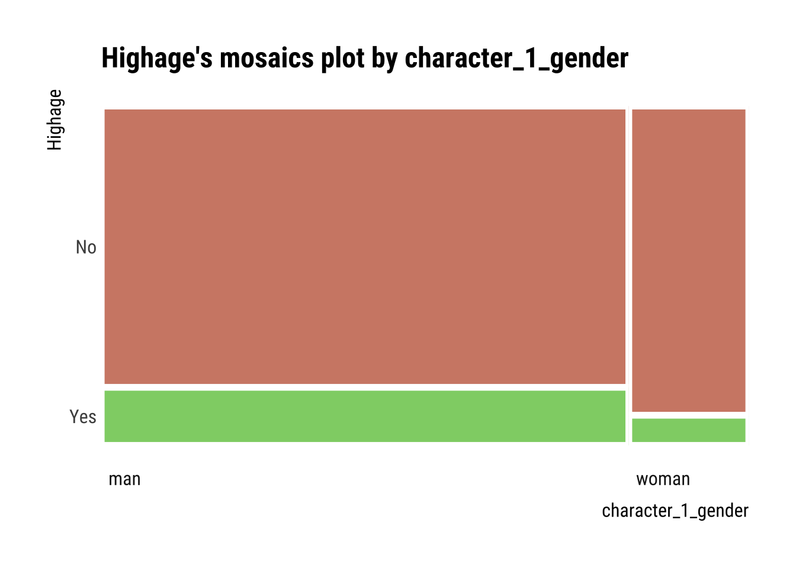

pacman::p_load(colorblindr, dlookr, formattable, GGally, ggdist, ggpubr, ggridges, here, tidyverse)# Set global ggplot() theme# Theme pub_clean() from the ggpubr package with base text size = 16theme_set(theme_pubclean(base_size =12)) # All axes titles to their respective far right sidestheme_update(axis.title =element_text(hjust =1))# Remove axes tickstheme_update(axis.ticks =element_blank()) # Remove legend keytheme_update(legend.key =element_blank())if (!require(hexbin)) install.packages("hexbin")
Rows: 1155 Columns: 13
── Column specification ────────────────────────────────────────────────────────
Delimiter: ","
chr (6): movie_name, director, actor_1_name, actor_2_name, character_1_gend...
dbl (5): release_year, age_difference, couple_number, actor_1_age, actor_2_age
date (2): actor_1_birthdate, actor_2_birthdate
ℹ Use `spec()` to retrieve the full column specification for this data.
ℹ Specify the column types or set `show_col_types = FALSE` to quiet this message.
# What does the data look like?dataset |>head() |>formattable()
movie_name
release_year
director
age_difference
couple_number
actor_1_name
actor_2_name
character_1_gender
character_2_gender
actor_1_birthdate
actor_2_birthdate
actor_1_age
actor_2_age
Harold and Maude
1971
Hal Ashby
52
1
Ruth Gordon
Bud Cort
woman
man
1896-10-30
1948-03-29
75
23
Venus
2006
Roger Michell
50
1
Peter O’Toole
Jodie Whittaker
man
woman
1932-08-02
1982-06-03
74
24
The Quiet American
2002
Phillip Noyce
49
1
Michael Caine
Do Thi Hai Yen
man
woman
1933-03-14
1982-10-01
69
20
The Big Lebowski
1998
Joel Coen
45
1
David Huddleston
Tara Reid
man
woman
1930-09-17
1975-11-08
68
23
Beginners
2010
Mike Mills
43
1
Christopher Plummer
Goran Visnjic
man
man
1929-12-13
1972-09-09
81
38
Poison Ivy
1992
Katt Shea
42
1
Tom Skerritt
Drew Barrymore
man
woman
1933-08-25
1975-02-22
59
17
Describe and Visualize Correlations
# Table of correlations between numerical variables (we are sticking to the default Pearson's r coefficient)correlate(dataset) |>formattable()
var1
var2
coef_corr
age_difference
release_year
-0.20430653
couple_number
release_year
0.02880378
actor_1_age
release_year
-0.01687673
actor_2_age
release_year
0.20850512
release_year
age_difference
-0.20430653
couple_number
age_difference
-0.24577787
actor_1_age
age_difference
0.70396310
actor_2_age
age_difference
-0.15646479
release_year
couple_number
0.02880378
age_difference
couple_number
-0.24577787
actor_1_age
couple_number
-0.10008828
actor_2_age
couple_number
0.13987535
release_year
actor_1_age
-0.01687673
age_difference
actor_1_age
0.70396310
couple_number
actor_1_age
-0.10008828
actor_2_age
actor_1_age
0.59134351
release_year
actor_2_age
0.20850512
age_difference
actor_2_age
-0.15646479
couple_number
actor_2_age
0.13987535
actor_1_age
actor_2_age
0.59134351
Correlations denote a statistical connection between two numerical variables. Finding correlations in data helps assess crucial assumptions in parametric statistics. This assumption implies if the variables are collected randomly.
# Correlation matrix of numerical variablesdataset |>plot_correlate()
Warning: 'plot_correlate' is deprecated.
Use 'plot.correlate' instead.
See help("Deprecated")
Warning: 'plot_correlate' is deprecated.
Use 'plot.correlate' instead.
See help("Deprecated")
If the correlation coefficient is close to +1, it suggests a strong positive linear relationship. If the correlation coefficient is close to -1, it implies a strong negative linear relationship. In both cases, a high correlation coefficient signifies a more predictable and consistent association between the variables.
`stat_bin()` using `bins = 30`. Pick better value with `binwidth`.
In the above plot it shows the correlation between actors gender and age. We can see that there is a strong correlation by the overlapping of the graph.
Describe and Visualize Relationships Based on Target Variables
Target Variables
Target variables are essentially numerical or categorical variables that you want to relate others to in a data frame.
Numerical Target Variables: Numerical Variable of Interest
# First, we need to remove NAs, they cause an errordataset.noNA <- dataset |>drop_na()# The numerical predictor variable that we wantnum <-target_by(dataset.noNA, actor_1_age)# Relating the variable of interest to the numerical target variablenum_num <-relate(num, actor_2_age)# Summary of the regression analysis - the same as the summary from lm(Formula)summary(num_num)
Call:
lm(formula = formula_str, data = data)
Residuals:
Min 1Q Median 3Q Max
-12.594 -6.462 -1.995 4.805 40.295
Coefficients:
Estimate Std. Error t value Pr(>|t|)
(Intercept) 15.79139 1.02800 15.36 <2e-16 ***
actor_2_age 0.82235 0.03303 24.90 <2e-16 ***
---
Signif. codes: 0 '***' 0.001 '**' 0.01 '*' 0.05 '.' 0.1 ' ' 1
Residual standard error: 8.41 on 1153 degrees of freedom
Multiple R-squared: 0.3497, Adjusted R-squared: 0.3491
F-statistic: 620 on 1 and 1153 DF, p-value: < 2.2e-16
We can see that the intercept is 15.791, and for every one-unit increase in actor_2_age, the response variable increases by 0.822. Both coefficients are highly significant.
# Plotting the linear relationshipplot(num_num)
This is the graph of actor 1 age and observed age predicted by the model.
Numerical Target Variables: Categorical Variable of Interest
# The categorical predictor variable that we wantnum <-target_by(dataset, actor_1_age) # We need to change Group to a factornum$character_1_gender <-as.factor(num$character_1_gender)# Relating the variable of interest to the numerical target variablenum_cat <-relate(num, character_1_gender)# Summary of the ANOVA analysis - the same as the summary from anova(lm(Formula))summary(num_cat)
Call:
lm(formula = formula(formula_str), data = data)
Residuals:
Min 1Q Median 3Q Max
-23.641 -6.928 -1.215 5.572 39.359
Coefficients:
Estimate Std. Error t value Pr(>|t|)
(Intercept) 41.6408 0.3329 125.072 < 2e-16 ***
character_1_genderwoman -5.4259 0.7735 -7.015 3.91e-12 ***
---
Signif. codes: 0 '***' 0.001 '**' 0.01 '*' 0.05 '.' 0.1 ' ' 1
Residual standard error: 10.21 on 1153 degrees of freedom
Multiple R-squared: 0.04093, Adjusted R-squared: 0.0401
F-statistic: 49.21 on 1 and 1153 DF, p-value: 3.913e-12
we can see a more overlap in the box plots of man an woman. This means that the box plot indicates less association with the actor age.
Categorical Target Variables: Numerical Variable of Interest
# The categorical predictor variable that we wantcateg <-target_by(dataset, character_1_gender)
Warning in target_by_impl(.data, vars): The target variable was assigned a
character type.
# Relating the variable of interest to the numerical target variablecat_num <-relate(categ, actor_1_age)# Summary of descriptive statisticssummary(cat_num)
described_variables character_1_gender n na
Length:3 Length:3 Min. : 214.0 Min. :0
Class :character Class :character 1st Qu.: 577.5 1st Qu.:0
Mode :character Mode :character Median : 941.0 Median :0
Mean : 770.0 Mean :0
3rd Qu.:1048.0 3rd Qu.:0
Max. :1155.0 Max. :0
mean sd se_mean IQR
Min. :36.21 Min. : 9.841 Min. :0.3067 Min. :11.00
1st Qu.:38.43 1st Qu.:10.068 1st Qu.:0.3212 1st Qu.:12.00
Median :40.64 Median :10.295 Median :0.3356 Median :13.00
Mean :39.50 Mean :10.187 Mean :0.4384 Mean :12.67
3rd Qu.:41.14 3rd Qu.:10.360 3rd Qu.:0.5042 3rd Qu.:13.50
Max. :41.64 Max. :10.424 Max. :0.6728 Max. :14.00
skewness kurtosis p00 p01
Min. :0.5264 Min. :0.2169 Min. :18.00 Min. :19.13
1st Qu.:0.5589 1st Qu.:0.2471 1st Qu.:18.00 1st Qu.:20.07
Median :0.5914 Median :0.2773 Median :18.00 Median :21.00
Mean :0.7430 Mean :0.7557 Mean :18.33 Mean :20.71
3rd Qu.:0.8513 3rd Qu.:1.0251 3rd Qu.:18.50 3rd Qu.:21.50
Max. :1.1113 Max. :1.7729 Max. :19.00 Max. :22.00
p05 p10 p20 p25 p30
Min. :23.0 Min. :26 Min. :28.0 Min. :29.00 Min. :30.00
1st Qu.:24.5 1st Qu.:27 1st Qu.:30.0 1st Qu.:31.00 1st Qu.:32.50
Median :26.0 Median :28 Median :32.0 Median :33.00 Median :35.00
Mean :25.0 Mean :28 Mean :31.0 Mean :32.33 Mean :33.67
3rd Qu.:26.0 3rd Qu.:29 3rd Qu.:32.5 3rd Qu.:34.00 3rd Qu.:35.50
Max. :26.0 Max. :30 Max. :33.0 Max. :35.00 Max. :36.00
p40 p50 p60 p70 p75
Min. :33.0 Min. :35.0 Min. :36.00 Min. :39.00 Min. :40.0
1st Qu.:35.0 1st Qu.:37.0 1st Qu.:39.00 1st Qu.:42.00 1st Qu.:43.5
Median :37.0 Median :39.0 Median :42.00 Median :45.00 Median :47.0
Mean :36.0 Mean :38.0 Mean :40.33 Mean :43.33 Mean :45.0
3rd Qu.:37.5 3rd Qu.:39.5 3rd Qu.:42.50 3rd Qu.:45.50 3rd Qu.:47.5
Max. :38.0 Max. :40.0 Max. :43.00 Max. :46.00 Max. :48.0
p80 p90 p95 p99 p100
Min. :42.0 Min. :50.00 Min. :55.00 Min. :67.74 Min. :75
1st Qu.:45.5 1st Qu.:52.50 1st Qu.:57.50 1st Qu.:68.37 1st Qu.:78
Median :49.0 Median :55.00 Median :60.00 Median :69.00 Median :81
Mean :47.0 Mean :53.67 Mean :58.33 Mean :68.58 Mean :79
3rd Qu.:49.5 3rd Qu.:55.50 3rd Qu.:60.00 3rd Qu.:69.00 3rd Qu.:81
Max. :50.0 Max. :56.00 Max. :60.00 Max. :69.00 Max. :81
This table provides descriptive statistics for the variable “character_1_gender.” It also provides insights into the central tendency, spread, and shape of the distribution of this variable.
plot(cat_num)
From this plot, we can see that “character_1_gender” has a moderately right-skewed distribution with some variability and potential outliers on the higher end.
Categorical Target Variables: Categorical Variable of Interest
We have created a new categorical variable called high age which denotes higher age in man and woman.
# The categorical predictor variable that we wantcateg <-target_by(cat_dataset, Highage)
Warning in target_by_impl(.data, vars): The target variable was assigned a
character type.
# Relating the variable of interest to the categorical target variablecat_cat <-relate(categ, character_1_gender)# Summary of the Chi-square test for Independencesummary(cat_cat)
Call: xtabs(formula = formula_str, data = data, addNA = TRUE)
Number of cases in table: 1155
Number of factors: 2
Test for independence of all factors:
Chisq = 8.979, df = 1, p-value = 0.002732
The Chi-square test indicates a significant association (p = 0.003) between “Highage” and “character_1_gender” in the dataset, suggesting that the distribution of gender differs based on whether the age is higher than the threshold to identify values that are considered higher or lower than the average.
plot(cat_cat)

We can see that the tiles are disproportional, it indicates an association between “Highage” and “character_1_gender.” So, No tile is larger in man and woman which denotes a lower likelihood of man or woman having higher age.